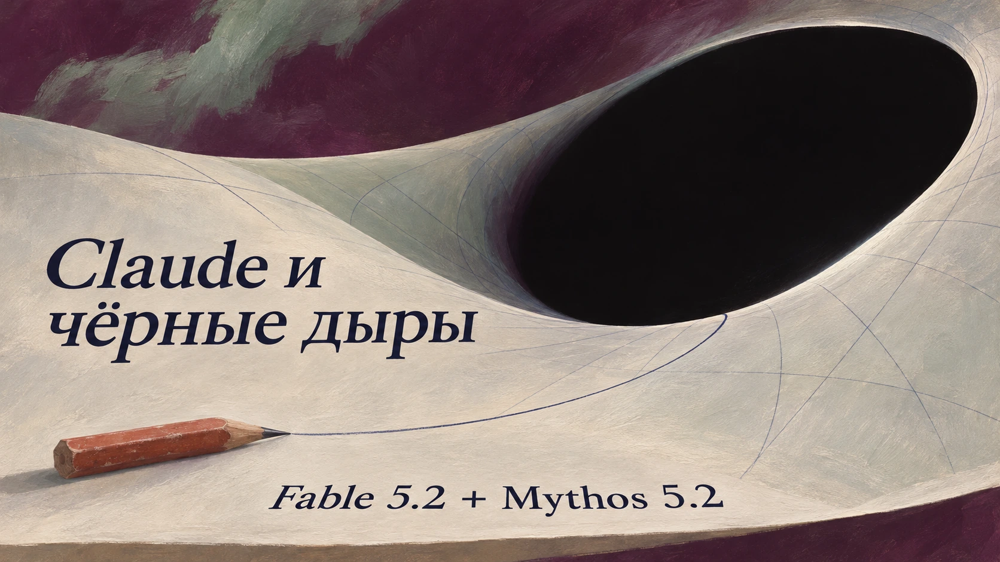

Наука и экология
Фундаментальная наука, космос, экология и наблюдение за природой.
27 ноября 2026

24 ноября 2026

23 ноября 2026

403 дата-центра США загрязняют атмосферу как целая Дания. Greenpeace взялась за NVIDIA
Новости ИИИсследователи оценили выбросы 403 американских дата-центров в 25,7 млн тонн CO₂ за год. Greenpeace отдельно сообщила о росте выбросов в цепочке поставок NVIDIA на 725% с 2020 года.

Google доверила Безосу запуск космических ИИ-серверов после испытания с Маском
Новости ИИGoogle заключила соглашение с Blue Origin о запуске спутников Project Suncatcher на New Glenn в первом квартале 2029 года. Каждый аппарат получит вычислительные мощности масштаба серверной стойки.
22 ноября 2026

18 ноября 2026

17 ноября 2026

14 ноября 2026

Роботам дали «мышечную память» — теперь они справляются с 92% испытаний
Новости ИИИсследователи MIT и Университета Карнеги — Меллона разработали Workspace Models: компактная память помогает роботам удерживать важные события и быстрее действовать. В четырёх лабораторных заданиях средний успех достиг 91,5%.

Учёные научили роботов падать в 6,5 раза реже
Новости ИИУчёные Мичиганского университета представили PRISM — модуль управления роботами, который снизил частоту падений в симуляции и повысил успешность захвата предмета настоящим манипулятором.

ИИ ускорил расчёты промышленных биореакторов в 10 тысяч раз
Новости ИИИсследователи Технического университета Граца разработали CLARA — открытую систему, которая упрощает вычислительные модели биореакторов до 5–50 зон и ускоряет моделирование до 10 тысяч раз.

Google научила ИИ заглядывать в будущее вашего здоровья на три месяца вперёд
Новости ИИЭкспериментальная система Google SensorWM моделирует, как изменения сна, ходьбы и активности могут повлиять на показатели здоровья за 12 недель. В основе — данные носимых устройств и 125 сценариев распорядка.
13 ноября 2026

11 ноября 2026

Anthropic выпустила два новых Claude и заявила о решении задач физики чёрных дыр
Новости ИИAnthropic выпустила Claude Fable 5.2 и Claude Mythos 5.2 на одной базовой модели с разными ограничениями доступа. Компания представила две научные рукописи по физике чёрных дыр и результаты испытаний ИИ в математике, инженерии и робототехнике; независимого рецензирования научных работ пока нет.

ИИ-робот нырнул на 4 км за металлами. Улов — 450 граммов
Новости ИИImpossible Metals сообщила о сентябрьском испытании подводного робота Eureka в Тихом океане: аппарат на глубине более 4 км собрал около 450 г полиметаллических конкреций. Компания утверждает, что ИИ помогает выбирать камни без видимых морских организмов; независимая экологическая оценка расширенной системы намечена на 2027 год.